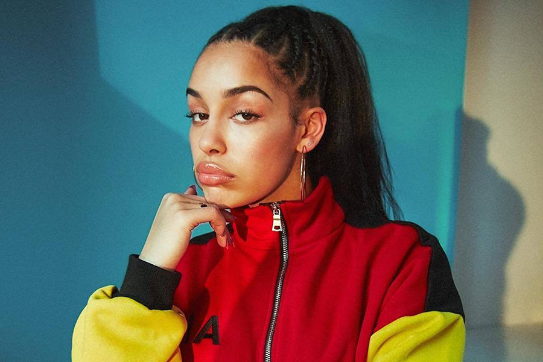

Wiki
조르자는 1997년 6월 11일 영국의 월솔에서 태어났다.
2016년도에 첫 데뷔 EP Project 11을 릴리즈하였으며 드레이크, 켄드릭 라마, 칼리 우치스, 스톰지, 버나 보이 등
여러 아티스트들과 콜라보를 해왔다.
2017년에는 브루노 마스의 24K Magic World Tour에서 오프닝을 맡았었다.
2018년에는 첫 앨범 Lost & Found를 릴리즈하였고 영국 앨범 차트에서 3위를 기록하였다.